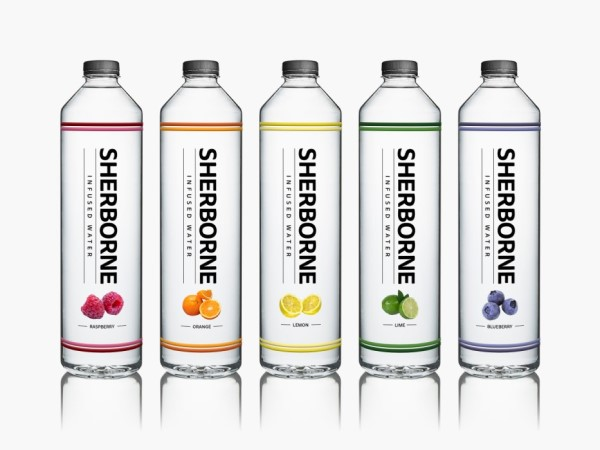
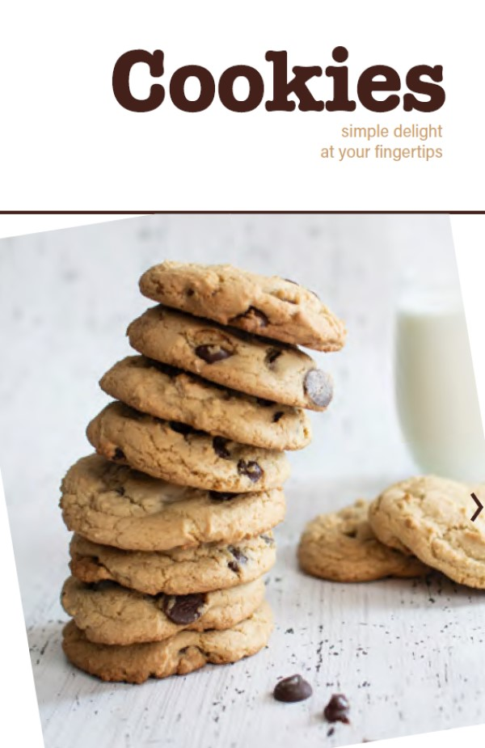
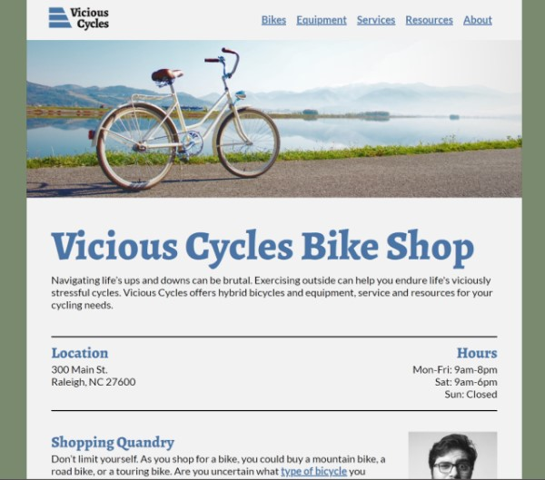

Julie Larson
Graphic and Web Designer
As a student of graphic and web design, I aim to communicate information in an effective and appealing manner. Through my studies, I hope to identify which areas of design interest me most. Currently, web design, publication design, and data visualization intrigue me.
After completing my formal studies, I plan to use my skills to aid a Christian ministry.
Featured Projects
View selected projects below. More information can be found at yourwebsite.com.
Branding: Sherbourne Infused Water
I created a beverage brand of infused water. I chose Sherborne as my brand name because it means bright or pure spring, brook, or stream. Then using Adobe Photoshop®, I designed beverage labels for various flavors of Sherbourne. After that, I created advertisements for each flavor and an animated GIF to promote the brand.
View project / case studyPublication: Cookies Cookbook
I designed a cookbook of cookies. Using Adobe inDesign®, I combined text and images to produce a document for both print and online presentation.
View project / case studyWebsite: Vicious Cycles
I designed the content and layout of a website for a fictional bike shop. Images, text, links, and a form are incorporated in the pages.
View project / case studyWork Experience
Programmer
IBM, May 1989 to October 1996
Worked on various projects.
- Retail point-of-sale software.
- Graphical user interface for the PC-based front-end to a host-based network management program.
Co-Op Student
IBM, five semesters between June 1984 and April 1988
Worked in midrange printer hardware and software development. Through these assignments, I learned that I prefer software development over hardware.
Education
Wake Technical Community College - Raleigh, NC
Pursuing a Web and Graphic Design Certificate, August 2020 to present
Certificate involves courses using HTML, CSS, Adobe Photoshop®, Adobe inDesign®, and Adobe Illustrator®.
Purdue University - West Lafayette, IN
Bachelor of Science in Electrical Engineering, 1984 to 1989
Co-oped amid my undergraduate years.